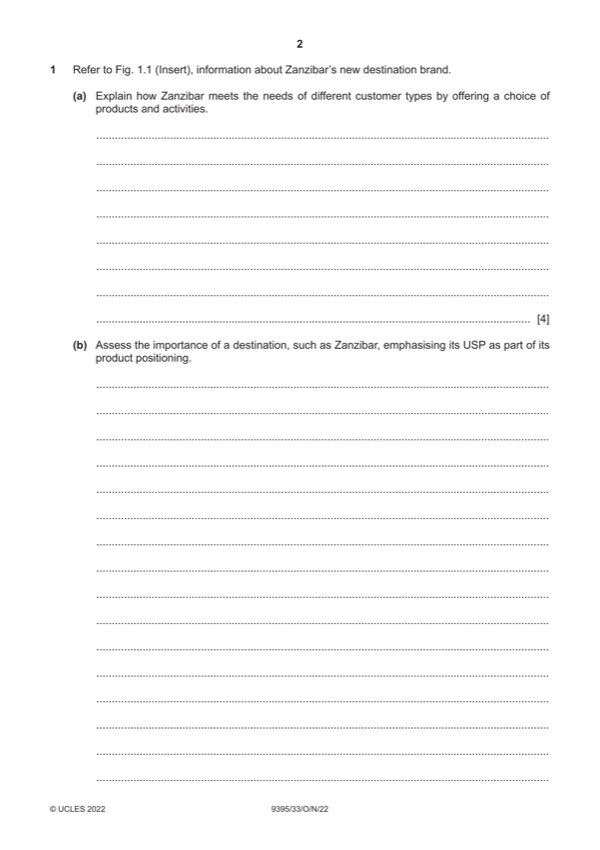

Question 1

Original paper page 2
Part 1(a) — solution
- Beaches (1) suitable for family groups (1)
- Nature (1) range of activities suitable for adventure tourists (1)
- History and heritage (1) attractions such as the UNESCO heritage site
- Exclusive resort accommodation/six classes of accommodation (1) for
Mark points
- Beaches (1) suitable for family groups (1)
- Nature (1) range of activities suitable for adventure tourists (1)
- History and heritage (1) attractions such as the UNESCO heritage site
- Exclusive resort accommodation/six classes of accommodation (1) for
Part 1(b) — solution
- Sets it apart (differentiation) from other island destinations
- Makes it more competitive
- Appeals to those who are attracted by specific features e.g. UNESCO
- Can be used to persuade customers to visit
- Helps overcome the issue of intangibility/customers know what to
- The USP helps define the image of the destination, so it’s clear who
Mark points
- Sets it apart (differentiation) from other island destinations
- Makes it more competitive
- Appeals to those who are attracted by specific features e.g. UNESCO
- Can be used to persuade customers to visit
- Helps overcome the issue of intangibility/customers know what to
- The USP helps define the image of the destination, so it’s clear who
Part 1(c) — solution
- Strengths – beaches, nature, cultural tourism; 27% GDP; increased
- Weaknesses – inconsistent brand messages; security/theft
- Opportunities – establish a strong brand personality; stand alone as a
- Threats – competition from other Indian Ocean destinations –
Mark points
- Strengths – beaches, nature, cultural tourism; 27% GDP; increased
- Weaknesses – inconsistent brand messages; security/theft
- Opportunities – establish a strong brand personality; stand alone as a
- Threats – competition from other Indian Ocean destinations –